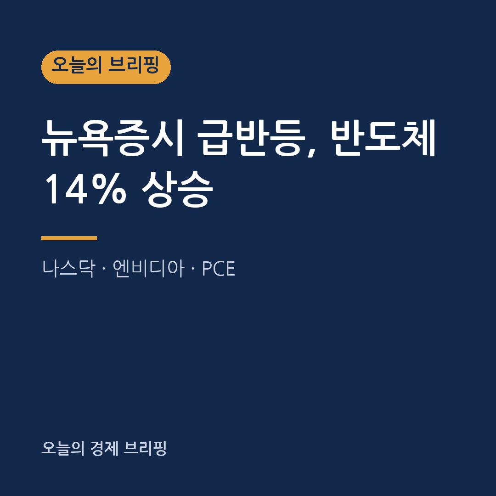
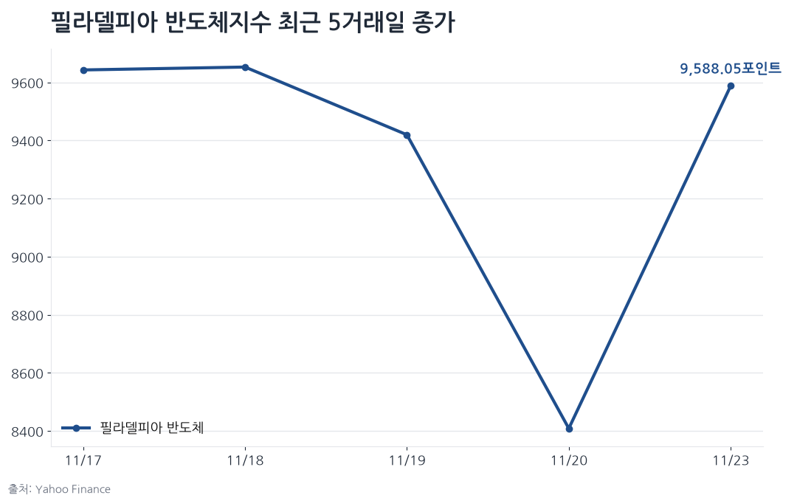

2026-11-24-0727-tistory 발행 키트 · 이 페이지는 검색에 노출되지 않습니다.
제목
카테고리
오늘의 브리핑태그
본문 (그림·표 포함)
휴대폰 블로그 앱에서는 그림이 같이 붙지 않을 수 있어요. 그때는 [글자만 복사] 후 아래 이미지를 저장해 [그래프1]·[표1] 자리에 첨부하세요.

핵심 요약: 11월 23일(현지시간) 뉴욕증시는 엔비디아 CEO 복귀 발표를 계기로 3대 지수가 일제히 급등했습니다. 나스닥 종합지수는 6.51% 상승했고, 필라델피아 반도체지수는 14.03% 올랐습니다.
▶ 배경: 직전 거래일의 반도체 급락 앞선 11월 20일에는 필라델피아 반도체지수가 10.73% 하락하며 시장이 크게 흔들렸습니다. 대중국 수출통제와 엔비디아를 둘러싼 규제·회계 우려가 겹친 결과로 전해졌습니다.
이번 반등은 그 낙폭을 되돌리는 성격이 강합니다. 반도체지수 종가 9,588.05는 11월 19일 종가 9,419.72보다 높은 수준입니다.
▶ 핵심 내용: 지수별 등락 나스닥은 24,089.56, S&P500은 7,237.17, 다우는 49,595.31에 마감했습니다. 나스닥 상승폭은 연합뉴스 보도 기준 1년 7개월 만에 가장 컸습니다.
11월 23일 미국 3대 지수 마감
| 지수 | 종가 | 전일 대비 | 등락률 |
|---|---|---|---|
| 나스닥 | 24,089.56 | +1,471.83 | +6.51% |
| S&P500 | 7,237.17 | +326.78 | +4.73% |
| 다우 | 49,595.31 | +1,447.98 | +3.01% |
출처: Yahoo Finance
최근 5거래일 흐름을 보면 하락 구간의 바닥이 11월 20일이었고, 23일 하루 만에 11월 18일 이후의 낙폭 상당 부분을 만회했습니다.

▶ 상승 요인 분석 1) 엔비디아 주가 급등: 국내외 보도는 엔비디아가 31.5% 안팎 오른 것으로 전했습니다. CEO 사임 이후 이어진 경영 공백 우려가 해소된 영향입니다.
2) 이사회 결정 번복: 한국경제에 따르면 사임 뒤 11일 만에 복귀가 결정됐습니다. 복귀 요구 청원과 미국 정부 측 발언이 영향을 준 것으로 보도됐습니다.
3) AI 관련주 동반 상승: 코어위브가 약 20%, 마이크론테크놀로지가 약 19% 올랐고 AMD는 약 6% 상승했습니다.
▶ 금리·환율·유가 [표2]
미 국채 10년물 금리는 사실상 변동이 없었고, 유가는 4%대 하락했습니다. 원·달러 환율은 소폭 상승해 1,340원대에 머물렀습니다.
▶ 영향과 확인할 점 국내 증시는 직전 급락의 여파로 코스피가 올해 1월 이후 10개월 만의 최저 수준인 4,708.54까지 내려와 있었습니다. 미국 반도체 반등이 국내 반도체 대형주에 어떻게 반영되는지가 우선 확인 대상입니다.
다만 증권가에서는 AI 투자의 지속성과 메모리 수급 불균형 등을 이유로 바닥을 단정하지 않고 있습니다. 25일 발표되는 미국 10월 PCE 물가지수도 연준의 12월 기준금리 판단에 영향을 줄 변수입니다.
▶ 정리 1. 나스닥 6.51%, S&P500 4.73%, 다우 3.01% 상승으로 마감했습니다. 2. 필라델피아 반도체지수는 14.03% 올라 직전 급락분을 대부분 회복했습니다. 3. 국내 증시는 반도체 반등의 지속 여부와 25일 PCE 발표를 확인해야 합니다.
금리·환율·유가 (11월 23일)
| 항목 | 종가 | 등락률 |
|---|---|---|
| 미 국채 10년물 금리 | 4.92% | +0.12% |
| 원·달러 환율 | 1,340.87원 | +0.46% |
| WTI 유가 | 80.25달러 | -4.44% |
출처: Yahoo Finance
이미지 (개별 복사·저장)
출처 (본문 맨 아래에 붙여넣기 권장)
- 연합뉴스, 나스닥 6.5%↑ 1년7개월만에 최대 상승(종합), https://www.yna.co.kr/view/AKR20261124009451072 - 한국경제, 뉴욕증시 브리핑 나스닥 6.5% 급등, https://www.hankyung.com/article/2026112454917 - 한국경제, 이사회 복귀 번복 경위, https://www.hankyung.com/article/202611235370i - 한국경제, 삼전닉스 증권가 분석, https://www.hankyung.com/article/2026112347276 - 시세: Yahoo Finance